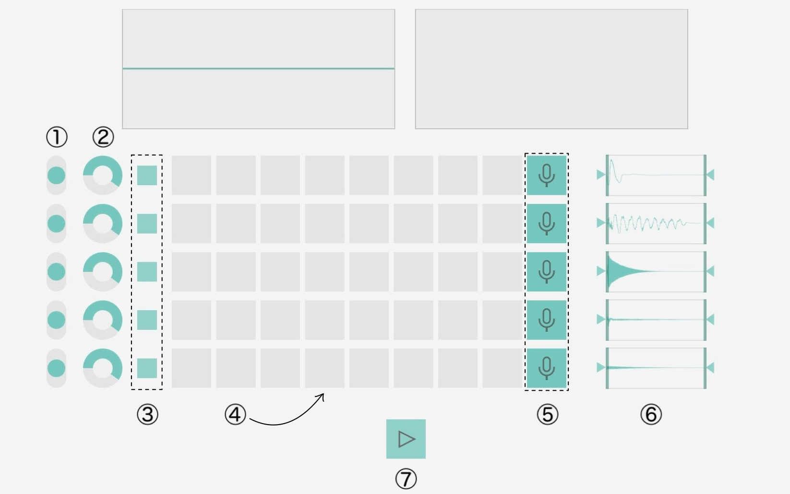
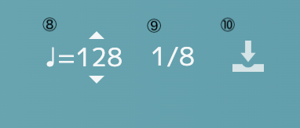

概要説明
Voice Beatsは、「いつでもどこでも作曲を」というモットーのもと制作された、web上で動くサンプラーです！
使い方


①ピッチベンド
各トラックのピッチを上下にずらすことができます。
②ボリュームコントロール
各トラックのボリュームを調節できます。
③ミュート
各トラックをミュートにすることができます。
ミュートボタンが緑のとき、トラックは再生されます。
④ステップ
ステップをクリックすることでステップの音が出るかどうかを切り替えられます。
⑤録音
録音ボタンをクリックすることで、トラックで再生する音を録音できます。
⑥トラックの波形表示とオフセットの調整
各トラックのファイルがどこからどこまで再生されるか調節することができます。
⑦再生
再生ボタンをクリックすることで、トラックを再生できます。
⑧BPM変更
テンポを変更することができます。
⑨リズムの細かさの変更
1/8、1/8T、1/16から、リズムの細かさを選べます。
⑩エクスポート
エクスポートボタンをクリックすることで、作成した音楽をwav形式でダウンロードできます。
注意事項
当サイトでデフォルトに設定された音源は、サイト作成者自身の肉声を加工したものです。
そのため、ユーザ様ご自身の楽曲に利用することは全く問題ありません。
ただし、当サイトでデフォルトに設定された音源素材の著作権を主張したり、音源素材を再配布したりすることをかたく禁止させていただきます。
免責事項
当サイトを利用したことによるいかなる損害に対しても、当サイトは一切の責任を負いません。
また、当サイトの利用によって生じたいかなる問題に対しても、当サイトは一切の責任を負いません。